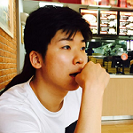

DongHwa Shin
Ph.D Candidates
Human Computer Interaction Lab, Seoul National University
dhshin_at_snu.ac.kr
Education
- B.S. in Computer Science, Korea Advanced Institute of Science and Technology (KAIST), (2008 ~ 2013)
- Ph.D Candidates in Computer Science and Engineering, Seoul National University, (2013 ~ )
Research Interest
- Exploratory Data Analysis
- Visual Analytics
- Progressive Visualization
Publication
[International]
-
XCluSim: A Visual Analytics Tool for Interactively Comparing Multiple Clustering Results of Bioinformatics Data
Sehi L'Yi, Bongkyung Ko, DongHwa Shin, Young-Joon Cho, Jaeyong Lee, Bohyoung Kim, and Jinwook Seo
BMC Bioinformatics, 2015; 16 Suppl 11:S5. also presented at BioVis 2015, 5th Symposium on Biological Data Visualization, July 10-11 in Dublin, Ireland.
[Domestic]
-
Progressive Visual Analytics Using Scagnostics and an Automatic Partitioning Variables Selection Method
DongHwa Shin, Sehi L'Yi, Hyunjoo Song and Jinwook Seo
Journal of KIISE, 2018, 45(8), 801-806. -
A Case Study on Exploration of Multidimensional Data using Scagnostics
DongHwa Shin, Sehi L'Yi, and Jinwook Seo
Korea Computer Congress 2018 -
A Survey on Visualization Guidelines for InfoVis Novices
Sehi L'Yi, DongHwa Shin, Youli Chang, Jaeyong Lee and Jinwook Seo
Korea Computer Congress 2018 -
Towards a Broader Understanding of Shoulder-surfing Problems
Sehi L'Yi, Jaemin Jo, DongHwa Shin, and Jinwook Seo
HCI Korea 2018 -
[최우수논문상]
Progressive Visual Analytics using Scagnostics and Automatic Partitioning Variables Selection Method
DongHwa Shin, Sehi L'Yi, and Jinwook Seo
Korea Software Congress 2017 -
[Poster][우수발표논문상]
A Visual Analytics System for Exploring Data Space of Multidimensional Data Using Cognostics
DongHwa Shin, Sehi L'Yi, and Jinwook Seo
Korea Computer Congress 2017 -
[Poster]
A Visual Exploratory Data Analytics Framework for Combined-Cognostics of Multidimensional Data
DongHwa Shin, Sehi L'Yi, Hyunjoo Song, and Jinwook Seo
한국정보과학회 2016년 동계학술대회 -
[우수논문상]
Visualizing Cluster Hierarchy Using Hierarchy Generation Framework
DongHwa Shin, Sehi L'Yi, and Jinwook Seo
KIISE Transactions on Computing Practices, 2015, 21(6), 436-441. -
[Poster][우수발표논문상]
Visualizing Cluster Hierarchy Using Hierarchy Generation Framework
DongHwa Shin, Sehi L'Yi, and Jinwook Seo
한국정보과학회 2014년 동계학술대회 -
Design and Development of Visual Analytic Tools in SRC-STAT
GuHyun Han, Young-Ho Kim, DongHwa Shin, Young Jo Lee, and Jinwook Seo
HCI Korea 2014
[Book Chapters]
-
Visual Analytics for Comparing Multiple Clustering Results of Bioinformatics Data
Sehi L'Yi, Bongkyung Ko, DongHwa Shin, Young-Joon Cho, Jaeyong Lee, Bohyoung Kim, Jinwook Seo
The Wiley Handbook of Human Computer Interaction, 2018
[Patents]
-
Electronic device and method of displaying object (객체를 디스플레이하는 전자 장치 및 방법)
Mee-sun Song, Heon-Jin PARK, Dong-Hwa Shin, Jin-Wook Seo, Hyun-Joo Song, Myoung-Su CHO
2015, US20150331560A1, KR20150133045A
Service & Work Experience
- Teaching Assistant, Data Visualization and Human Interaction, SNU Big Data Institue (UDSL), 2018
- Teaching Assistant, Data Visualization, SNU DS² Course, 2018
- Teaching Assistant, Big Data Analysis with Python, SNU Bundang Hospital, 2018
- Tutor, Capstone Project, SNU Big Data Institute, 2017
- Teaching Assistant, Information Visualization and HCI, SNU Big Data Institute, 2017
- Teaching Assistant, Information Visualization and Visual Analytics, Seoul National University, 2017
- Student Volunteer, IEEE PacificVis 2017
- Teaching Assistant, Advanced Human-Computer Interaction, Seoul National University, 2016
- Teaching Assistant, Programming Practice (C Language), Seoul National University, 2014
- Teaching Assistant, Programming Practice (C Language), Seoul National University, 2013
- Undergraduate Intern, Programming Language Research Group, KAIST, 09/2012 ~ 12/2012
- Undergraduate Intern, CG Team, Contents Research Lab., ETRI, 06/2011 ~ 07/2011